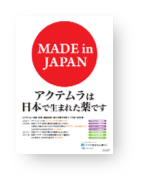
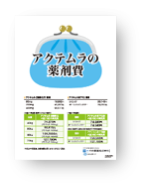

中外MRが取るべき行動、ACTが伝えるべきこと②
- ●次に検討されるのは最も高額なシンポニーです。シンポニーでよく使われる100mgはACTやETN-BSの3倍以上の年間薬剤費であり、費用対効果面での議論が加速していきます。皆さんはこの環境変化を踏まえつつ「国産パンフ」や「薬価パンフ」を使って「ETN-BSは採用予定か？」、「シンポニーは今後どう考えていくか？」など、今後の治療方針について話し込んでみて、担当施設の動向を確認していって下さい。  
- ●最終的に市場は、効果が期待できかつ安価なACTかETN-BSとなっていく施設が増加していくことが予測されます。
- ●『リウマチ白書』にあるように患者さんが求めるのは効果・安全性が高く、経済性に優れる薬剤です。自信を持ってACT特性を伝え、しっかりと処方依頼して下さい。我々はETN-BS発売をチャンスと捉えてACTを患者さんに届け、結果としてエンブレルを抜いてBio製剤での売上topを獲得します。